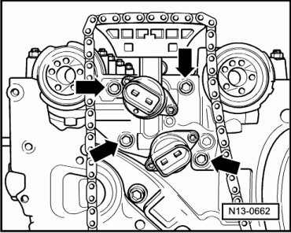
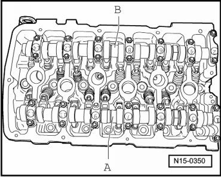
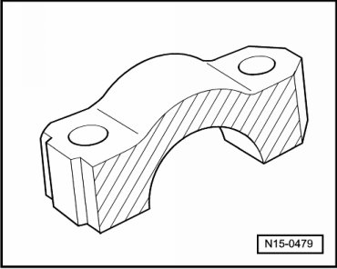
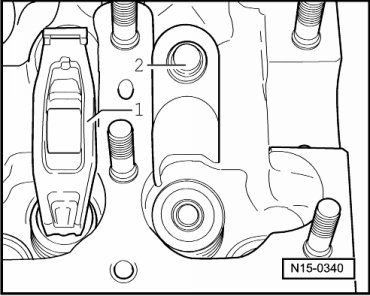
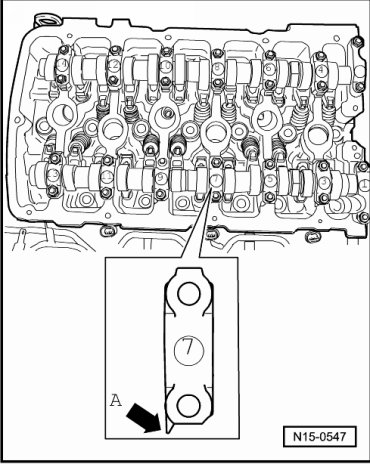
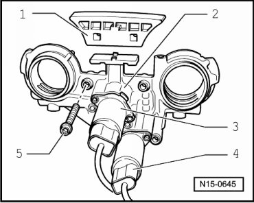
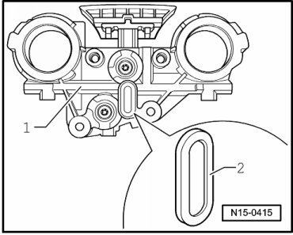

Camshafts
Camshafts
Special tools, testers and auxiliary items required
• Camshaft bar (T10068 A)
• Torque wrench (5 to 50 Nm) (V.A.G 1331)
• Torque wrench (40 to 200 Nm) (V.A.G 1332)
• Sealant (D 176 501 A1)
Removing
• The camshafts can only be removed with the engine or cylinder head removed.
CAUTION!
When doing any repair work, especially in the engine compartment, pay attention to the following due to clearance issues:
• Route all the various lines (e.g. for fuel, hydraulics, EVAP system, coolant, refrigerant, brake fluid and vacuum lines and hoses) and electrical wiring so that the original positions are restored.
• Ensure sufficient clearance to all moving or hot components.
Procedure
- Adjust crankshaft at securing bolt of vibration damper in direction of engine rotation to TDC cyl. 1 marking - arrow -.

- Remove intake manifold and cylinder head cover --> [ Cylinder Head Cover ] Cylinder Head Cover.
- Remove only the thermostat housing --> [ Cooling System Components, Engine Side, Assembly Overview ] Cooling System Components, Engine Side, Assembly Overview.
- Remove chain tensioner for camshaft roller chain - arrow -.

- Remove camshaft cover.
• The cover has a "hidden bolt". It can be removed only after the thermostat housing has been removed.
- Mark roller chains before removing (e.g. with paint, arrow pointing in direction of rotation).

• Do not mark chain using a center punch or similar means!
- First, remove the exhaust camshaft adjuster.
• Counter-hold only with 32 mm open end wrench on camshaft - arrow -. Camshaft bar (T10068 A) must not be inserted when tightening or loosening camshaft adjuster.

- Remove camshaft adjuster together with camshaft roller chain from the intake camshaft.
- Place camshaft roller chain aside.
- Remove control housing from cylinder head - arrows -.

- Pull control housing carefully off camshaft seals.
• If disassembling the control housing or cleaning the strainer is necessary --> [ Disassembling and Assembling Control Housing ] and --> [ Checking Strainer of Control Housing for Contamination ]
- A - Intake Camshaft

- First remove bearing caps 1 and 13.
- Remove bearing caps 3 and 11.
- Remove bearing cap 7.
- Loosen and remove bearing caps 5 and 9 in alternating and in diagonal sequence.
- B - Exhaust Camshaft
- First remove bearing caps 2 and 14.
- Remove bearing caps 4 and 12.
- Remove bearing cap 8.
- Loosen bearing caps 6 and 10 in alternating and in diagonal sequence.
Continuation for Both Camshafts
- Carefully remove camshafts and place on a clean surface.
- Remove roller rocker lever together with support elements and place on a clean surface.
- Ensure the roller rocker levers and the support elements are not interchanged.
Installing
Conditions
• When installing the camshafts, the cam lobes for cylinder 1 must point upward.
Procedure
- Coat contact surface of bearing caps 7 and 8 lightly with grease (G 052 723 A2) before installing.

- Insert support element in cylinder head and install roller rocker lever onto respective valve stem end and support element.
- Make sure that all roller cam followers - 1 - properly contact valve shaft tips and are clipped into the respective support elements - 2 -.

- Oil running surfaces of both camshafts.
- Place respective camshaft carefully in camshaft bearings of cylinder head. While doing so, observe identification of camshafts --> [ Camshaft Identification ] Application and ID.
• Observe installed position of bearing caps:
• Points of bearing caps - arrow A - of intake and exhaust camshaft point outward.

• Markings on bearing caps are legible when viewed from the intake side.
- A - Intake Camshaft
- Tighten bearing caps 5 and 9 alternately and diagonally to 5 Nm and 1/8 turn (45°) further.
- Install bearing caps 1 and 13 and tighten to 5 Nm and 1/ 8 turn (45°) further.
- Install bearing cap 7 and tighten to 5 Nm and 1/ 8 turn (45°) further.
- Install bearing caps 3 and 11 and tighten to 5 Nm and 1/ 8 turn (45°) further.
- B - Exhaust Camshaft
- Tighten bearing caps 6 and 10 alternately and diagonally to 5 Nm and 1/8 turn (45°) further.
- Install bearing caps 2 and 14 and tighten to 5 Nm and 1/ 8 turn (45°) further.
- Install bearing cap 8 and tighten to 5 Nm and 1/ 8 turn (45°) further.
- Install bearing caps 4 and 12 and tighten to 5 Nm and 1/ 8 turn (45°) further.
Continuation for Both Camshafts
- Position camshafts in cylinder head to TDC No. 1 cylinder. 1.
- It must be possible to insert camshaft bar (T10068 A) into both shaft grooves.

- Before installing, check control housing strainer for soiling --> [ Checking Strainer of Control Housing for Contamination ]
- Before installing control housing, lightly oil sealing ring contact surfaces of camshafts in control housing.
- Lightly oil sealing ring contact surfaces of camshafts and slowly slide control housing over camshaft sealing rings.
- Install control housing - arrows - and fasten with 8 Nm.
How to adjust valve timing --> [ Intermediate Driveshaft and Camshaft Drive Timing Chains, Installing ] Intermediate Driveshaft and Camshaft Drive Timing Chains, Installing.
- Clean old sealing compound from the 3 mm holes in the cylinder head gasket - arrows -.

• With the cylinder head installed only half of the holes in the cylinder head gasket are visible.
- Fill 3 mm holes in cylinder head gasket with sealant (D 176 501 A1) and apply a raised drop of sealant at each of these points.
• The Sealant (D 176 501 A1) hardens quickly.
- Lubricate O-ring for oil channel seal and install with oil seal into cover.
- Coat sealing surface of cover piece with sealant (D 176 501 A1) and install immediately.
- First insert all fastening bolts and lightly tighten.
- Then tighten bolts M8 to 23 Nm, and tighten bolts M6 to 8 Nm.
- Install the camshaft roller chain tensioner and tighten it to 40 Nm.
- Install cylinder head cover and intake manifold --> [ Cylinder Head Cover ] Cylinder Head Cover.
Disassembling and Assembling Control Housing

1 Guide rail: Clipped in at control housing
2 Control housing
3 Camshaft adjustment valve 1 (N205)
4 Camshaft adjustment valve 1 (exhaust) (N318)
5 8 Nm
Camshaft adjustment valves, removing and installing --> [ Camshaft Adjuster Valves ] Camshaft Adjuster Valves.
Checking Strainer of Control Housing for Contamination

- Unclip strainer - 2 - at rear side of control housing - 1 - and remove possible contamination.